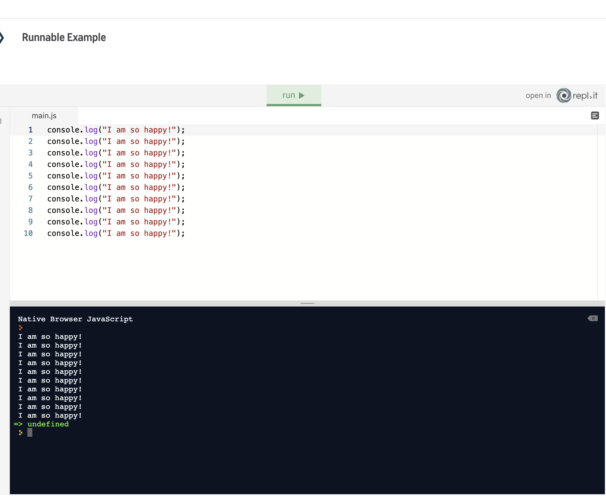
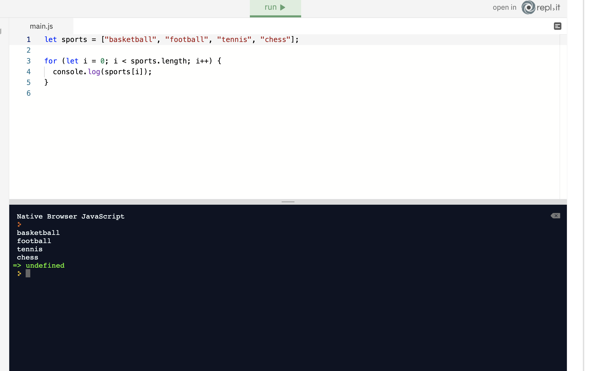

Iterations are performed in loops. We are going to explain each loop in the following lessons. You can think of iteration as doing the same step over and over again until a certain condition is met. For example, you can tell the computer to take five steps in one direction until it gets home: step.forward(5) until home; This means step.forward(5) is going to repeat over and over again until it gets home.
step.forward(5) until home;
for loops
for (statement 1; statement 2; statement 3) {
code block to be executed
}
Don’t worry. It won’t be that abstract when we look at some examples. Let’s say you are very happy today, super happy! You are learning JavaScript from the comfort of your home; things are good, right? And you want to shout ten times how happy you are. Imagine how unhappy you would be if you had to type the same thing all ten times:
That can’t be right. There must be a much easier way to write the same thing ten times. "For" loop to the rescue:
dans explaination - above statement is broken into three parts to start the loop, we need the start point, (ie 0) we need amount of the loop or the condition, ie start at 0 and if variable is less than (<) 10, next we tell the computer what to do, the third part, to incrememnt by 1 we just use var++ simple actually... start at 0, the condition and the action
0 for example
if the variable is less than more than etc
do this - var++ var-- etc
iterating throught arrays allows us to run through arrays we can use a for loop to execute a piece of code for every item in an array
The first thing we want to do is create an array that we are going to iterate through. Iteration is going to display all the items in the array:
We created an array on the first line and initialised the for loop on the third line. The critical part is in the parentheses of the for loop. After the declaring the variable i, which we assigned zero to, we check whether the var i is less than the overall size of the array sports. How can we check the size of the array? By using length property, remember? Therefore, iteration will go on until i becomes 4. When it becomes 4, iteration will stop because 4 is not less than 4. When iteration ends, the code block in the curly brackets will not be executed. In the each iteration i is incremented by one which means it is going to be 0,1,2,3. As before we can access items in an array by their index. That means that we can get the first item in our sports array like this: sports[0] Instead of 0, we have incrementer which is going to be 0,1,2,3. That means code block in the {} brackets is going to be sports[0], sports[1], sports[2] and sports[3].
Loops and Iteration - Required - For Loops: At this point in your JavaScript journey, you've learned a multitude of somewhat disconnected ideas which have yet to be able to do much on their own. The concept of loops and iteration will bring a lot of those ideas together. Consider that you are the social media manager for a company and the company would like a website containing the usernames of all their Twitter followers. It doesn't need to be pretty, it just needs to be functional. In the code window we've created a list of 200 random usernames and stored it in a variable called usernames, for you to use as a sample. Your challenge is to: Write a for loop that iterates through the usernames and for each username, logs a valid HTML paragraph tag to the console containing the username (e.g.
username1
). Requirements: The output must match exactly and every username must be included. Note: Though this is not a requirement, don't forget you can use template literals if you want your code to be modern and elegant! If you're stuck, the Loops and Iteration lesson - specifically the For Loops and For Loops and Arrays units - will give you everything you need to succeed. Be sure to submit and compare your answer with the model solution (only available to view after you click submit).